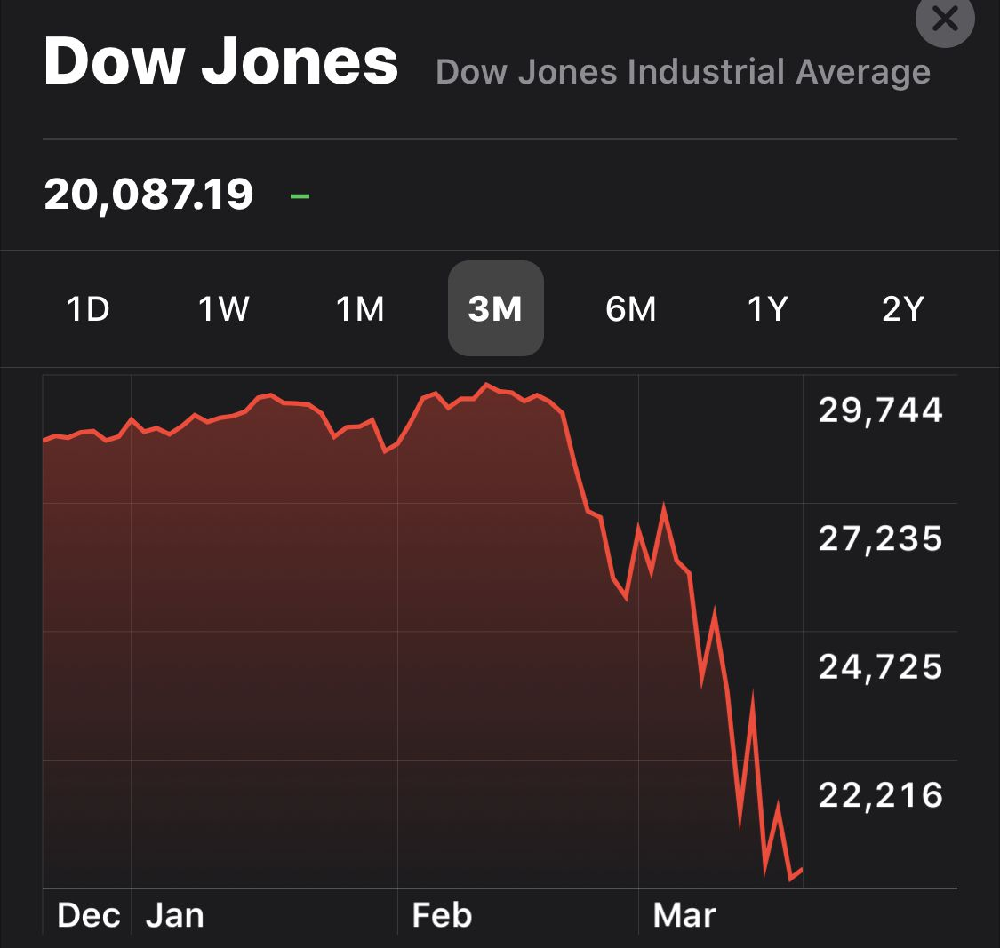
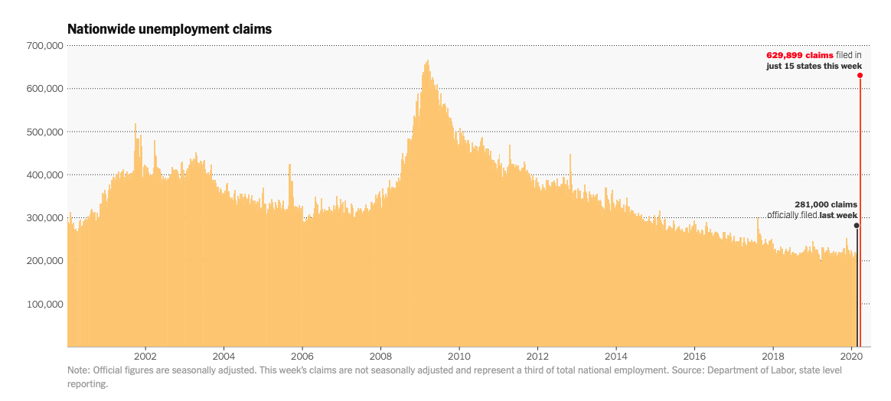

You Can Help

Things aren't good right now.
We all know that the stock market isn't the economy, but the stock market is down big. The Dow has lost about a third of its value in the past several weeks and other investment funds that I follow have dropped by about a quarter. More alarmingly, earlier today the New York Times reported that the number of jobless claims increased by 124% from 281,000 to 629,899 in just one week! All of the restaurants, bars, cafés, bakeries, gyms, theaters, clubs, and travel services who sent their workers home are showing just how big and how fast the impact to individuals' lives and livelihoods is.
Just yesterday I went outside for more than a few minutes for the first time in five days. I went around the corner to a coffeeshop that was still open. The place was empty. Tables and chairs had been barricaded and a makeshift counter had been setup to deliver coffee to customers from more than six feet away. A line of tape on the ground, six feet from the cashier, informed customers to go no further forward. The employee backed away when I walked up to tap my phone to pay. The only other employee there made my coffee and set it on the makeshift counter before walking back six feet and allowing me to get the drink. There was no one else in the café. I asked, all things considered, with the place being take out only, whether business was still okay, at least during the morning hours where people begin to caffeinate. The guy behind the counter, with a look of quiet desperation in his eyes, said "no".
The next day the café announced that they were closed later that afternoon.

These stories are everywhere. And I'm fighting back tears every time I venture outside to say goodbye to my favorite spots one last time before they close down. Every time, the employees and the owners look stunned and sad.
You can help. If you have a steady job and surplus cash on hand or if you have a tax refund, I implore you to help these people.
Many places, such as Backbar (@backbarunion), Trina's Starlite Lounge (@trinastarlite-parlorsports), and Vinal Baker (@vinalbakery) have set up Venmo accounts where you can send donations to their staff.
Yoga studios like Be have set up donation pages and special 10 class passes to support them as they are closed and only offering online live stream classes.
Spots like 1369 Coffeehouse and Highland Kitchen have set up Go Fund Me pages to provide direct monetary relief for their service workers who are now without jobs.
Casting a wider scope, the Greg Hill Foundation has started the Restaurant Strong Fund, where restaurant, bar, café, and nightclub tipped employees who have lost their jobs can apply for $1,000 grants. (Click here for the grant application)
Someone in Somerville (I don't know who) put together this list that shows the status of restaurants and other small businesses and what you can do to support them.
If you don't have the funds to support with cash donations, consider signing up with Mutual Aid Medford and Somerville to offer to cook or clean or deliver or talk. But remember to take care of yourself first, otherwise you're of no use to others.
And to all the medical workers out there, thank you. If you need COVID-fighting equipment 3D printed, Formlabs has a support network where they can hook you up with what you need. Conversely, if you have a 3D printer, you can sign up to offer your printing services there as well.
Things are going to continue to get worse before they get better. Don't wait for the government to step in and help—you can begin helping now, if you are able to. Do what you can. Don't do what you can't.
Stay safe. Keep your distance from others. Practice good hygiene. Be kind to others. Know that hospitals in Boston and elsewhere are starting to fill up and deplete supplies, but don't panic. Pledge to help however you are able. Do the best that you can. Take care of yourself and then take care of your communities.